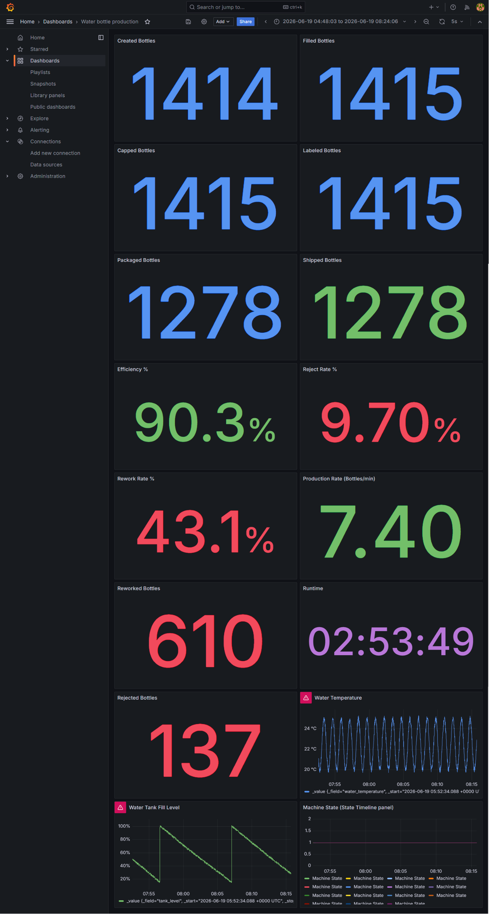

Water Bottle Production Line Simulation
Advanced Programming Final Project
Project Overview
This project is a Python simulation of a water bottle production line. It follows bottles through creation, quality checks, filling, capping, labeling, packaging, and shipping.
The backend logic is written in Python using object-oriented programming. The HMI was built with Tkinter and includes Start, Stop, Reset, and Export CSV controls. It also displays live counters, machine state, current stage, quality log, production history, rework, and rejection results.
The project also sends live data to InfluxDB and visualizes it in Grafana. Docker Compose is used to run InfluxDB and Grafana locally. The system does not control real hardware; sensor values and defects are simulated for the programming assignment.
Key Features
- ✓ Continuous water bottle production simulation
- ✓ Tkinter HMI with Start, Stop, Reset, and Export CSV
- ✓ Quality checks at Bottle QC, Fill QC, Cap QC, Label QC, and Final QC
- ✓ Rework handling for correctable defects
- ✓ Final rejection handling for failed bottles
- ✓ Production counters, KPIs, runtime, and CSV export
- ✓ InfluxDB storage and Grafana dashboard visualization
Actual Project Files
- •
production_lineV7.py— backend simulation, bottle class, production counters, QC, rework, rejection, KPIs, and CSV export. - •
hmi_v7.py— Tkinter HMI used to control and monitor the simulation. - •
producer.py— readstelemetry_state.jsonand sends values to InfluxDB. - •
docker-compose.yml— starts InfluxDB and Grafana containers. - •
production_report_v7.csv— exported production history from the simulation.
Data Flow
The project uses a simple monitoring pipeline:
The HMI runs the simulation and writes the latest state to a JSON file. The producer reads this file once per second and sends production, sensor, and machine-state values to InfluxDB. Grafana then reads the data from InfluxDB and displays the dashboard.
Production Stages
Bottle Creation → Bottle QC → Water Filling → Fill QC → Cap Installation → Cap QC → Label Application → Label QC → Final QC → Packaging → Shipping
Defects before Final QC can be sent to rework. Final QC failures are rejected and removed from the production process.
Project Screenshots
Two final screenshots from the project: the HMI and the Grafana dashboard.

